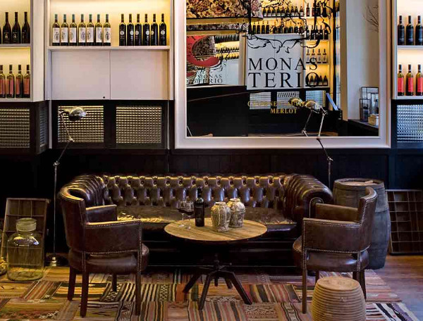
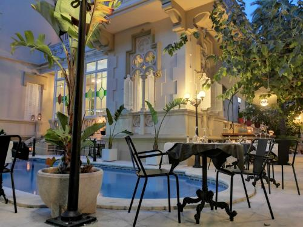

Reiseübersicht
Alles Organisatorische auf einen Blick – zum Nachschauen, nicht zum Vorlesen. Die Geschichten und der Zeitplan zu jedem einzelnen Tag stehen unter Tage.
Kalender im Überblick
| Tag | Datum | Ort | Kurzfassung |
|---|---|---|---|
| 1 | Sa, 29.08. | Barcelona | Ankunft, Casa Batlló bei Nacht, Cerveceria Catalana |
| 2 | So, 30.08. | Barcelona | Sagrada Família, Torre Bellesguard |
| 3 | Mo, 31.08. | Barcelona | Park Güell, Casa Vicens, Gràcia, Bunkers del Carmel |
| 4 | Di, 01.09. | Barcelona | Barri Gòtic, El Born, Sky Bar Sonnenuntergang |
| 5 | Mi, 02.09. | Barcelona | Casa Batlló, La Pedrera, Las Vermudas |
| 6 | Do, 03.09. | Barcelona → Sitges | Umzug, Bears Sitges Week Eröffnung |
| 7 | Fr, 04.09. | Sitges | Stadtbesichtigung, Bear Week Opening |
| 8 | Sa, 05.09. | Sitges | Gay Beach & Szene |
| 9 | So, 06.09. | Sitges | Ausflug Garraf |
| 10 | Mo, 07.09. | Sitges | Bewusster Ruhetag, Chiringuito Iguana |
| 11 | Di, 08.09. | Sitges → Abreise | Rückflug ab Terminal 2, 17:00 Uhr |
Hotels
Barcelona: Praktik Vinoteca
Carrer de Balmes 51, Eixample. 29.08.–03.09.2026 (5 Nächte), Check-in 14:00 / Check-out 12:00, Zimmer Exterior Double, Reservierung P5930794 (M6010387), Gesamtpreis 769,50 €.
Warum genau dieses Hotel: hervorragende Lage, fußläufig zu den meisten Sights, ruhiges Boutiquehotel mit Weinbar, gute Restaurants direkt in der Umgebung.

Sitges: El Xalet
Carrer de l'illa de Cuba 35, Sitges. 03.–08.09.2026 (5 Nächte), Check-in 15:00–23:00 / Check-out 08:00–12:00, Doppel-/Zweibettzimmer ohne Verpflegung, Buchungsnummer 6931601479, Gesamtpreis 934,90 € (kostenlos stornierbar bis 30.08.2026).
Warum genau dieses Hotel: schönes historisches Gebäude, kurze Wege zu Altstadt, Strand und Szeneviertel.

Flüge
| Hinflug | Rückflug | |
|---|---|---|
| Route | Frankfurt → Barcelona | Barcelona → Frankfurt |
| Datum | 29.08.2026 | 08.09.2026 |
| Flug | Condor DE 4325 | Condor DE 4324 |
| Abflug | 14:05 | 17:00 (Terminal 2) |
| Ankunft | 16:05 | 19:05 |
Booking ID (lastminute.com) 3205591137, PNR 16105770, Gesamtpreis 570,58 € für beide Flüge/2 Personen (inkl. FullFlex). Online-Check-in ab 28.08. (Hinflug) bzw. 07.09. (Rückflug) auf der Condor-Website.
Ankunft: R2-Nord-Flughafenzug direkt von Terminal 2 bis Passeig de Gràcia (ca. 25 Min., ca. 5,15 €/Ticket, alle 30 Min.), danach 5 Gehminuten zum Hotel.
Abreise: Checkout El Xalet bis 12:00 → R2 Sud bis El Prat de Llobregat (ca. 27 Min.) → Umstieg R2 Nord bis Aeroport T2 → über 2 Std. Puffer vor dem Rückflug.
Gebuchte Tickets
| Sehenswürdigkeit | Datum | Uhrzeit | Typ | Preis |
|---|---|---|---|---|
| Sagrada Família | So, 30.08. | 10:45 | General | 52 € |
| Torre Bellesguard | So, 30.08. | 14:00 | Audioguide-Tour | 24 € |
| Park Güell | Mo, 31.08. | 11:00 | Standard | 36 € |
| Casa Vicens | Mo, 31.08. | 13:30 | General | 46,40 € |
| Casa Batlló | Mi, 02.09. | 09:30 | Gold | 82 € |
| La Pedrera/Casa Milà | Mi, 02.09. | 11:30 | Essenziell | 58 € |
| Las Vermudas | Mi, 02.09. | 18:00 | Paket Explorer | 40 € |
| Sky Bar/La Terraza | Di, 01.09. | 19:30 | Entry + First Drink | 34 € |
Reservierungen: nötig oder spontan?
- Cerveceria Catalana (Tag 1): keine Reservierung möglich – auf die Wartelisten drinnen/draußen setzen, früh kommen.
- Las Vermudas (Tag 5): reserviert, Zahlung vor Ort (Karte/Bar).
- Sky Bar/La Terraza del Central (Tag 4): reserviert.
- Alle anderen Restaurants dieser Reise: keine Reservierung nötig, spontanes Reingehen reicht.